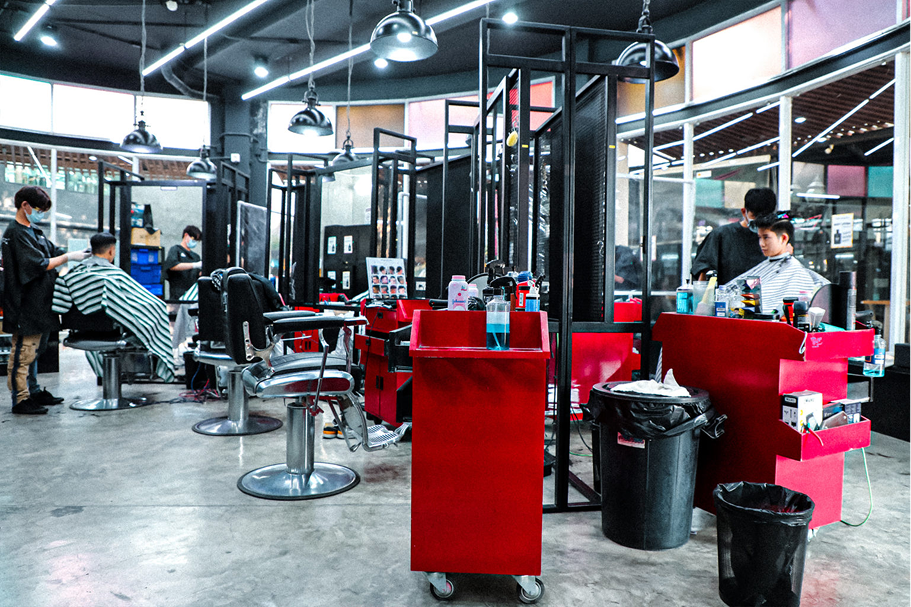

ที่อยู่: 1839 Phaholyothin Rd, Lat Yao, Chatuchak Bangkok 10900 Thailand
โทร: 065-928-0572
Google Map: กดที่นี่
รัชโยธิน เป็นอีกหนึ่งย่านที่พลุกพล่าน เพราะนอกจากเป็นพื้นที่ยอดนิยมที่คนชานเมืองพักอาศัยแล้ว ยังมีผู้ประกอบการธุรกิจมากมายที่เลือกให้ย่านรัชโยธินเป็นที่ตั้งหลัก ทำให้ตอนนี้รัชโยธินถือได้ว่า เป็นหนึ่งในทำเลทำเงินเลยก็ว่าได้ อีกทั้งยังเติบโตอย่างรวดเร็วทั้งในเชิงด้านธุรกิจ ด้านอสังหาริมทรัยพ์ เพราะเป็นจุดเชื่อมต่อถนนสายหลักทั้งถนนพหลโยธินและถนนรัชดาภิเษก ทำให้ปัจจุบันเราจึงเห็นสิ่งอำนวยความสะดวกห้างสรรพสินค้า คอมมูนิตี้ฯ โรงพยาบาล คลินิก แหล่งเอ็นเตอร์เทนเมนต์ชื่อดัง มีร้านอาหาร ร้านนั่งชิว และคอนโดมิเนียมชื่อดังมากมายผุดขึ้นในย่านนี้
NEVERSAYCUTZ ร้านตัดผมชาย อันดับ 1 ที่มีสาขามากที่สุดในกรุงเทพ ก็เป็นอีกหนึ่งร้านที่มองเห็นการเติบโตในด้านธุรกิจย่านรัชโยธิน และเพื่อให้เข้าถึงกลุ่มลูกค้าได้มากขึ้น จึงขยายสาขาและเปิด NEVERSAYCUTZ สาขารัชโยธิน ซึ่งอยู่ภายใน อเวนิว รัชโยธิน
เปิดบริการทุกวัน 10.00 – 21.00 น.